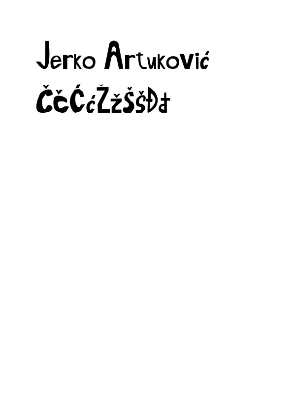

U ovoj vježbi koristio sam program Fontographer za izradu vlastitog fonta. Nacrtao sam slova imena i prezimena pomoću alata Pen, te definirao hrvatske znakove. Nakon testiranja fonta u programima Illustrator i Photoshop, spremio sam ga u formatima .jpg i .pdf. Vježba mi je omogućila upoznavanje s osnovama tipografije i postupkom kreiranja fontova.
